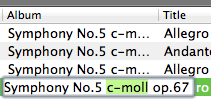

Edit tags
After you add some files to the Files Table, you can start editing tags. Qoobar supports two ways of editing: edit in the Files Table and edit in the Tags Table.
Edit in the Files Table
This feature allows you to change one tag of one file at a time. You can only change standard tags that are visible in the Files Table. To change a tag, double-click on it, type the new value, then press Enter.

You can use any placeholder and functions, combining them to achieve the desirable result.
Edit in the Tags Table
The Tags Table allows you to change tags in a group of files.
- Select several files in the Files Table.
- To set one tag for all selected files, click on this tag (f.e. on the "Artist" tag) and type a text.

- To edit one tag file by file, double-click the tag. See also The Edit Dialog.
To number tracks starting from 1 to N (where N is the number of selected files), click on the "Track number" tag, type
1and press Enter.Note: If you type01, track numbers will be two-digit formatted: 01, 02 etc.- To remove some tags, select these tags in the Tags Table and press Delete.
- To delete all tags from selected files click . It removes all tags which Qoobar can read. You can undo the deletion.
Copying and pasting tags
If you copy only one tag (only one line in the Tags Table), you can paste it where you want, even if you select other files.
If you copy several tags (Composer and Album, for example), you can only paste them into the same tags (though you can select other files).
Note: If the option "Automatically fill a tag when pasting a single line" is enabled in the Preferences Dialog, then you can fill tags in more than one file using just one file as a source. To achieve this, copy the desired tags of this file, then select several other files and paste the selected tags into them. All files will be filled, not just the first one.
You can paste some text from the clipboard into one selected tag.
Copying selected tags into the clipboard is also possible.
Operations with tags
There is a number of operations that you can use to edit tags. You can find them in the context menu:
- Change case - changes case to lower, upper, sentence-like etc. The equivalent functions:
$lower,$upper,$caps,$caps2. - Simplify whitespaces - removes leading, trailing and inner extra whitespaces. The equivalent function:
$simplify - Remove diacritics - replaces latin characters with diacritical marks by plain ones. The equivalent functions:
$ansior$ascii - Transliterate - replaces cyrillic (Russian) characters with latin ones according to
this scheme. The equivalent function:
$transliterate. - Fix encoding - recodes tags written in local encodings (f.e. Russian Windows 1251, KOI8-R, and CP866) into UTF8.
Qoobar uses enca for guessing the tag encoding, so if you want a better guess, please set a preferable language in the Preferences dialog.
The default enca guess language is Russian. The equivalent function:
$recode.
© 2009-2015 Alex Novichkov